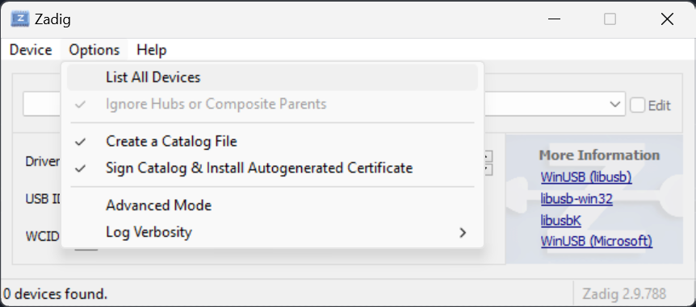
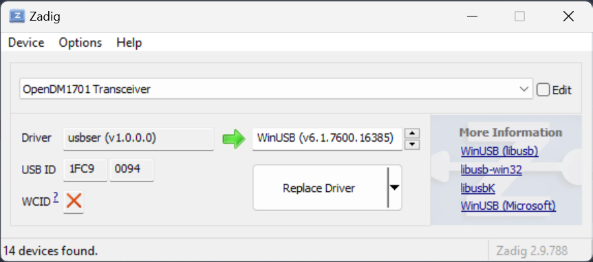
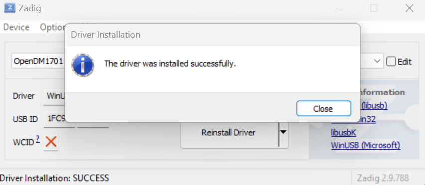
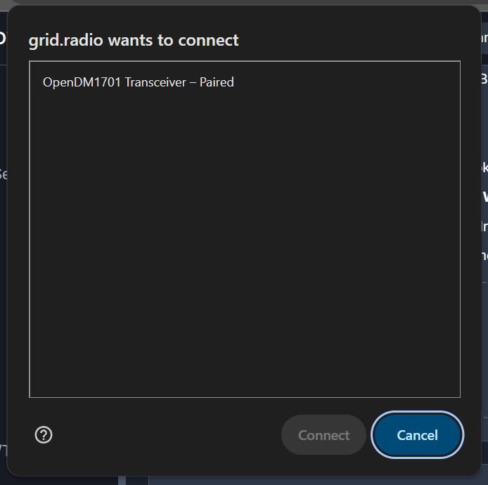
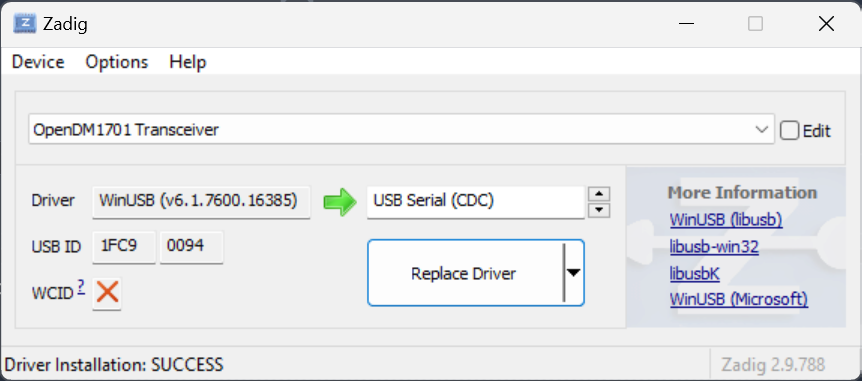

Codeplug Overview
Quick Actions
My Saved Codeplugs
No saved codeplugs
Save your current codeplug to the local libraryGeneral Settings
Boot
Channels
| # | Name | Type | RX Freq | TX Freq | CC/Tone | TS | Contact | TG List | Power | Actions |
|---|
No channels yet
Contacts / Talk Groups
| Name | ID | Type | TS Override | Actions |
|---|
No contacts yet
TG Lists (RX Groups)
| # | Name | Contacts | Contact List | Actions |
|---|
No TG lists yet
Zones
| # | Name | Channels | Channel List | Actions |
|---|
No zones yet
VFO A/B Settings
VFO A
VFO B
DMR ID Database
What to load
Import the RadioID user database with Load from CSV (radioid.net/static/user.csv), then pick a region to narrow the IDs written to the radio.
Data & storage
Choose your radio and how much text to store per ID. Auto-fit uses the longest length that still fits every loaded ID.
| DMR ID | Callsign | Name | City | Country | Actions |
|---|
APRS Configuration
| Name | SSID | Via Path | Icon | Comment | TX (QSY) | Actions |
|---|
No APRS configurations
DTMF
DTMF Settings
DTMF Contacts
| Name | Code | Actions |
|---|
No DTMF contacts
Satellite Frequencies
Satellite tracking for OpenGD77 radios.
Configure satellite frequencies, CTCSS tones, and update TLE (Two-Line Element) orbital data for amateur radio satellites.
| Cat # | Name | RX1 Voice | TX1 Voice | CTCSS | Arm | RX2 APRS | TX2 APRS | RX3 CW | TX3 | APRS Path | TLE | Actions |
|---|
No satellites configured
Click "Load Defaults" to add common amateur radio satellitesUK Repeaters
| Callsign | Name/QTH | Type | TX Freq | RX Freq | CTCSS/CC | Locator | Status |
|---|
Loading UK repeaters...
DMR Repeaters
Loading DMR repeater data
Download the repeater data file from radioid.net/static/rptrs.json, then use Load from File to import it.
| Callsign | City | Country | TX Freq | RX Freq | CC | Network | Status |
|---|
Loading DMR repeaters...
World Repeater Map
Import CSV
WTR Licence Import
| Licence # | TX Freq (MHz) | RX Freq (MHz) | Product | Mode | ERP | Antenna | Licencee | Status |
|---|
Use the search filters above to find WTR licence records.
Tip: Search by name, frequency band, location, or licence number to get started.
Scan Lists
| Name | Channels | Priority Ch1 | Priority Ch2 | Actions |
|---|
No scan lists
My Codeplugs
Your Saved Codeplugs
Loading your codeplugs...
Boot Settings
Display Options
Security
Boot Image
Boot Melody
Advanced: raw note,duration data
note1,duration1,note2,duration2,… Notes 0–63, durations 1–255 (×27 ms). The firmware plays up to 255 notes and stops at a duration of 0.Band Limits
VHF Band
UHF Band
Theme Editor
Core Colors
Boot Screen
Menu Colors
Notifications
Channel/VFO Screen
Signal Bars
Satellite/GPS
Live Preview
Theme Library
Radio Tools
Screen Grab
Download a screenshot from the radio display.
Voice Prompts
Select from library or upload your own voice prompts.
Backup Flash
Create a full backup of the radio flash memory.
Restore Flash
Restore flash memory from a backup file.
Backup Registers
Backup secure registers from the radio.
Calibration
Backup or restore radio calibration data.
Radio Preferences
Settings menu preferences stored on the radio (display, sound, radio options,
general flags). Read them from a connected radio to edit, or leave unread to
keep the radio's existing preferences. These are saved in your JSON codeplug
and local library, but are not part of exported .g77 files.
Clone Radio
Write the codeplug currently loaded in this app (opened from a file or local library, or read from a radio) to the connected radio, with a new callsign and DMR ID. This is the bulk-programming flow: load once, then write to as many radios as you need. Optionally include the radio's Settings preferences and display theme - those are captured from a radio when you click Read Source first. Cloning between different models is supported (preferences are translated). Calibration data is never copied.
- Load a codeplug (file / local library) - or click Read Source to also capture a radio's preferences and theme.
- Enter the new callsign / DMR ID for this target radio.
- Click Write to this Radio, then repeat steps 2-3 for each radio.
Firmware Update
Update OpenGD77 firmware on your radio.
Put your radio into DFU mode before uploading firmware:
- MK22 (GD-77, DM-1801, RD-5R): Press and hold SK1 + SK2 while turning on
- STM32 (MD-UV380, MD-9600, MD-2017, DM-1701): Hold PTT + top side key while turning on
- DM32/UV008 (Baofeng DM-32): Hold PTT + SK1 together while turning on (green LED = update mode)
Warning: Incorrect firmware can brick your radio. Only use official OpenGD77 firmware files.
CPS User Guide
Everything you need to know to get started with the OpenGD77 CPS
Welcome to OpenGD77 CPS!
The OpenGD77 CPS (Code Plug Studio) is a free, web-based tool that lets you program your radio directly from your browser. No downloads or installations required!
What's in This Guide
Getting Started
Before you can program your radio, you'll need a few things:
Connecting Your Radio
Follow these simple steps to connect your radio to the CPS:
Use the dropdown at the top of the screen to choose your radio type:
- MK22 - For GD-77, DM-1801, and RD-5R radios (WebUSB)
- STM32 - For MD-UV380, MD-9600, MD-2017, and DM-1701 radios (WebUSB)
- DM32 / UV008 - For the Baofeng DM-32 / UV008 (Web Serial, no driver needed)
Plug your radio into your computer using the USB cable. Make sure the radio is turned ON.
Click the Connect button in the top toolbar.
A popup will appear - select your radio from the USB device list (WebUSB radios) or the serial port list (DM-32 / UV008), then click Connect.
The status indicator at the top will turn green when connected. You can now read from or write to your radio!
Interface Overview
The CPS is organized into three main areas:
Navigate between different sections of your codeplug. Click any item to open that section.
Contains your most-used actions:
- Connect - Connect to your radio
- Read - Read the codeplug from your radio
- Write - Write the codeplug to your radio
- Open - Open a codeplug file from your computer
- Save - Save your codeplug as a JSON file
- Export - Export as G77 binary file
This is where you'll edit your channels, zones, contacts, and other settings. The content changes based on which section you select from the sidebar.
Working with Channels
Channels are the heart of your codeplug. Each channel stores a frequency, name, and other settings for a repeater or simplex frequency.
Adding a New Channel
- Go to the Channels section in the sidebar
- Click the Add Channel button
- Fill in the channel details:
- Name - A friendly name (up to 16 characters)
- RX Frequency - The frequency to receive on
- TX Frequency - The frequency to transmit on (same as RX for simplex)
- Mode - FM for analog, DMR for digital
- Click Save to add the channel
Editing a Channel
- Click on any channel in the list to select it
- Edit the fields you want to change
- Your changes are saved automatically
DMR Channel Settings
When you set a channel to DMR mode, additional options appear:
- Color Code - Must match the repeater (usually 1)
- Time Slot - TS1 or TS2, as required by the repeater
- Contact - The default talkgroup or contact for this channel
- TG List - A list of talkgroups you can access on this channel
Organizing Zones
Zones are folders for your channels. They help you organize channels into logical groups - for example, by location, band, or use case.
Creating a Zone
- Go to the Zones section in the sidebar
- Click Add Zone
- Give your zone a name (e.g., "London Repeaters", "2m Simplex", "DMR Nets")
- Add channels to the zone by selecting them from the list
Why Use Zones?
- Quick Access - Switch between groups of related channels easily on your radio
- Organization - Keep hundreds of channels manageable
- Favorites - Create a zone with your most-used channels for quick access
Contacts & Talkgroups
Contacts are used for DMR (digital) communication. They can be individual DMR users or Talkgroups (group calls).
Types of Contacts
Group conversations - like a radio "chat room" that multiple people can join. Most DMR activity uses talkgroups.
Individual DMR users you can call directly using their DMR ID.
TG Lists
A TG List is a collection of talkgroups you can access on a channel. When you assign a TG List to a channel, you can switch between those talkgroups while on that channel.
Importing Talkgroups
You can import talkgroup lists directly from various DMR networks using the Import from DMR Network button in the TG Lists section. Supported networks include:
- TGIF - TGIF Network talkgroups
- Brandmeister - Brandmeister network talkgroups
- System X - System X talkgroups
- FreeDMR - FreeDMR Worldwide and UK talkgroups
- DMR+ - DMR+ network talkgroups
- ADN Systems - ADN Systems talkgroups
- DVSPh - DVSPh DMR talkgroups
- QuadNet - QuadNet talkgroups
Common Talkgroups
Here are some popular worldwide talkgroups:
- 91 - Worldwide
- 235 - UK nationwide
- 310 - USA Tac 310
- 9 - Local area
Importing Data
Save time by importing data from various sources:
Saving Your Work
There are several ways to save your codeplug:
Save Options
VFO A/B Settings
VFO (Variable Frequency Oscillator) mode lets you manually tune to any frequency without using preset channels.
What is VFO Mode?
Your radio has two VFOs: VFO A and VFO B. Think of them as two scratch pads where you can dial in any frequency on the fly.
When to Use VFO
- Trying out a new frequency before saving it as a channel
- Scanning across a band to find activity
- Quick QSOs without setting up a permanent channel
Setting Up VFO Defaults
In the VFO A/B section, you can configure the default settings for each VFO:
- Frequency - The starting frequency
- Mode - FM or DMR
- Power - Transmit power level
- Step Size - How much the frequency changes when you turn the dial
APRS Settings
APRS (Automatic Packet Reporting System) lets your radio send your location and other data over the air.
Setting Up APRS
- Go to the APRS section in the sidebar
- Use Add Regional Default to create a starter config for your region and digipeater path (WIDE1-1/WIDE2-1, NOGATE, RFONLY or DIRECT)
- Or click Add Config and set the name, Tx SSID, symbol, via path and comment
- Set TX Frequency (QSY) to the APRS channel (e.g. 144.800 in Europe) and tick Transmit QSY
- For a fixed position tick Use Fixed Position and enter Latitude/Longitude
An APRS config is assigned to a channel or VFO using its APRS dropdown. Satellite APRS (ISS, SONATE-2) is set up in the Satellites section.
Common SSID Numbers
- -7 - Handheld
- -9 - Mobile
- -1 - Home station
General Settings
The General Settings section contains important radio-wide options:
Key Settings Explained
- DMR ID - Your unique digital ID number (required for DMR operation)
- Callsign - Your amateur radio callsign
- Radio Name - Displayed on your radio's screen
- Timeout Timer - Automatically stops transmitting after a set time
- Scan Mode - How the radio behaves when scanning
- Squelch Level - Adjusts sensitivity to weak signals
Boot Settings
Customize what appears on your radio's screen when it starts up:
- Boot Screen Text - Custom text shown at startup (usually your callsign)
- Boot Image - Some radios support a custom boot image
- Boot Sound - Enable or disable the startup sound
- Intro Screen Duration - How long the boot screen is displayed
Theme Editor
Personalize your radio's display with custom colors and themes!
What You Can Customize
- Background colors
- Text colors
- Menu highlighting
- Battery indicator colors
Using Pre-made Themes
The Theme Editor includes several pre-made themes you can apply with one click. Choose from dark, light, colorful, and retro styles.
Satellites
Program and track amateur radio satellites. Each entry stores voice (RX1/TX1), APRS (RX2/TX2) and CW (RX3) frequencies plus TLE orbital data.
Managing Satellites
- Load Defaults - choose from a list of common satellites to add (existing ones are skipped, up to 25)
- Update TLEs - download current orbital data for accurate pass predictions
- Add Satellite - enter frequencies and catalogue number manually
- Clear All - remove every satellite (asks for confirmation)
Repeaters & Map
Search analogue and DMR repeaters from the worldwide database and import them straight into your codeplug.
- Filter by band, mode, network, country and status, and search by callsign or location
- Click a repeater for details and import it, or select several and import them together
- The Repeater Map plots matching repeaters - click a marker for details and import
DMR ID Database
The DMR ID database resolves DMR IDs to callsigns so your radio shows names instead of numbers.
- Download the RadioID database from the DMR ID section
- Select a region first if you only need a subset
- Write the database to the radio afterwards
Talk Groups
A talk group list groups the talkgroups used by a DMR channel.
- Create a list, add contacts/talkgroups to it, then assign it to a channel
- On the radio, use the list to select a talkgroup for the channel
Scan Lists
Scan lists define what the radio scans when you start a scan.
- Add channels or zones to a scan list
- Assign the list to a channel, or select it on the radio
DTMF
Create DTMF codes (0-9, A-D, * and #) that can be sent from the radio to control repeaters and other equipment.
My Codeplugs
Keep multiple codeplugs organised and reload them whenever you need.
- Save the current codeplug with a name and reload it later
- Import or export codeplugs as files to back them up or share them
Band Limits
Band limits restrict which frequencies the radio is allowed to transmit on, per band and per radio model.
Radio Tools
Maintenance utilities for the connected radio, such as calibration and diagnostic actions.
Troubleshooting
Having problems? Here are solutions to common issues:
- Make sure the radio is turned on
- Try a different USB cable
- Windows users of MK22/STM32 radios: install the WinUSB driver (not needed for the DM-32 / UV008 - see USB Setup)
- Make sure you're using Chrome, Edge, or Brave browser
- Don't touch the radio or cable during transfer
- Try a shorter or higher quality USB cable
- Restart both the radio and browser
- Only Chrome, Edge, and Brave support WebUSB
- Firefox and Safari won't work - switch browsers
- Make sure you're not in private/incognito mode
- Double-check your frequencies are correct
- For DMR: verify the Color Code and Time Slot
- Make sure you have a contact/TG assigned to DMR channels
- Check that the channel is added to a zone
- Download the DMR ID database (in the DMR ID Database section)
- Make sure you write it to the radio after downloading
Quick Reference
Handy tips for power users:
Pro Tips
- Backup regularly - Save your codeplug to a file before making major changes
- Use zones wisely - Group channels by location or purpose for easier navigation
- Test before committing - Read your radio's codeplug first to make sure connection works
- Local library - Save codeplugs to your device's local library for quick access later
USB Setup Guide
About USB Connections
The OpenGD77 CPS uses WebUSB for MK22 and STM32 radios (GD-77, DM-1801, RD-5R, MD-UV380, MD-9600, DM-1701) and Web Serial for the DM-32 / UV008. Setup requirements vary by operating system — see the platform-specific sections below.
Note: WebUSB requires a Chromium-based browser such as Google Chrome or Microsoft Edge. Firefox and Safari do not support WebUSB.
Windows Setup
On Windows, you need to install the WinUSB driver using Zadig so the browser can access the radio's USB interface.
Note: You do not need Zadig for the DM-32 / UV008. These radios connect over a standard USB serial port (Web Serial), which Windows supports out of the box. Zadig is only needed for radios that use WebUSB (MK22: GD-77, DM-1801, RD-5R; STM32: MD-UV380, MD-9600, DM-1701).
1. Download Zadig
- Visit https://zadig.akeo.ie/
- Download the latest version of Zadig
- Run the downloaded executable — no installation is required

2. Install WinUSB Driver
- Connect your radio to your computer via USB and turn it on
- Open Zadig
- Go to Options → List All Devices
- Select your radio from the dropdown list (look for OpenGD77 or similar)
- Ensure the target driver on the right is set to WinUSB
- Click Replace Driver (or Install Driver if no driver is currently installed)
- Wait for the installation to complete — you should see a success message


3. Connect in CPS
- After installing the WinUSB driver, click the Connect button in the CPS header
- Your browser will show a popup asking you to select a USB device
- Select your radio from the list and click Connect
- The radio status indicator should change to show the radio is connected

Reverting to the Original Driver
If you need to use the radio with other software (such as the original desktop CPS), you can switch back using Zadig:
- Open Zadig
- Go to Options → List All Devices
- Select your radio from the dropdown list
- Change the target driver to USB Serial (CDC)
- Click Replace Driver

Linux Setup
Linux requires a few steps to allow WebUSB to access the radio. The kernel's cdc_acm driver and ModemManager service can both interfere with WebUSB.
1. Disable ModemManager
ModemManager often grabs USB serial devices and blocks WebUSB access. Disable it (you can re-enable it later if needed):
sudo systemctl stop ModemManager
sudo systemctl disable ModemManagerIf you need ModemManager for a mobile broadband modem, you can instead add an ignore rule — see your distribution's documentation.
2. Unload cdc_acm Kernel Module
The cdc_acm driver claims the radio's USB interface before the browser can. Unload it:
sudo rmmod cdc_acmTo prevent it from loading automatically on boot, create a blacklist file:
echo "blacklist cdc_acm" | sudo tee /etc/modprobe.d/blacklist-cdc_acm.conf
sudo update-initramfs -uIf you use other USB serial devices that need cdc_acm, consider a more targeted udev rule instead of a full blacklist.
3. Add udev Rules
Create a udev rule to allow non-root users to access the radio. Create the file /etc/udev/rules.d/99-opengd77.rules:
# MK22 radios (GD-77, DM-1801, RD-5R)
SUBSYSTEM=="usb", ATTR{idVendor}=="1fc9", ATTR{idProduct}=="0094", MODE="0666", GROUP="plugdev"
# STM32 radios (MD-UV380, MD-9600, DM-1701)
SUBSYSTEM=="usb", ATTR{idVendor}=="0483", ATTR{idProduct}=="df11", MODE="0666", GROUP="plugdev"Then reload the rules:
sudo udevadm control --reload-rules
sudo udevadm trigger4. Connect
Unplug and reconnect the radio, then click Connect in the CPS. If the radio still doesn't appear, try logging out and back in (or reboot) so the new group membership takes effect.
macOS Setup
macOS generally works with WebUSB without additional setup. However, if you have trouble connecting:
- Make sure you are using Google Chrome or another Chromium-based browser
- Try a different USB cable or port — some cables are charge-only
- If the radio doesn't appear in the browser device picker, try disconnecting and reconnecting the radio
- On Apple Silicon Macs, ensure your USB-C adapter/hub supports data transfer
Troubleshooting Tips
- Radio not appearing? Make sure the radio is turned on and connected via USB. Try a different USB cable or port.
- Browser not showing the USB popup? Ensure you are using a Chromium-based browser such as Google Chrome or Microsoft Edge. Firefox and Safari do not support WebUSB.
- Connection fails after selecting the device? Try unplugging the radio, waiting a few seconds, and reconnecting. Then click Connect again.
- Linux: "Access denied" or no device listed? Check that ModemManager is stopped, cdc_acm is unloaded, and udev rules are in place. You may need to log out and back in after adding yourself to the
plugdevgroup. - Windows: Using a DM-32 / UV008? You do not need Zadig or the WinUSB driver — these radios use a standard USB serial port. Just click Connect and pick the port.
- Windows: Wrong driver installed? Open Zadig again, select the device, and ensure WinUSB is selected as the target driver, then click Replace Driver.
OpenGD77 User Guide
Comprehensive documentation for OpenGD77 firmware
Loading User Guide...